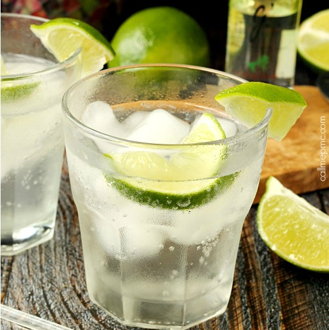

Gin & Tonic
Ingredients
- 2 oz gin
- 4 oz tonic water
- Lime wedge or slice for garnish
- Ice
- Cucumber slice (optional)
Instructions
- Fill a highball glass with ice.
- Pour in the gin and top with tonic water.
- Stir to combine.
- Garnish with a lime wedge or slice and serve.
- Optional: Add a cucumber slice or lime juice to taste.
Variations
- Hendrick's G&T: Use Hendrick's Gin and garnish with cucumber slices for a refreshing twist.
- Pink Gin & Tonic: Add a splash of cranberry juice for a light pink hue and fruity flavor.
- Herbal G&T: Add rosemary or thyme for a fragrant variation.
History
The Gin & Tonic has its roots in British colonial India during the 19th century. British officers would mix gin with tonic water, which contained quinine—a bitter compound used to ward off malaria. The gin helped make the tonic more palatable, and a squeeze of lime or lemon was often added for extra flavor.
Over time, the Gin & Tonic evolved from a medicinal necessity into a refreshing and iconic cocktail enjoyed around the world. Today, it's a go-to drink for hot days and casual gatherings, and it's easy to see why: it's crisp, simple, and endlessly customizable with different gins, tonics, and garnishes.